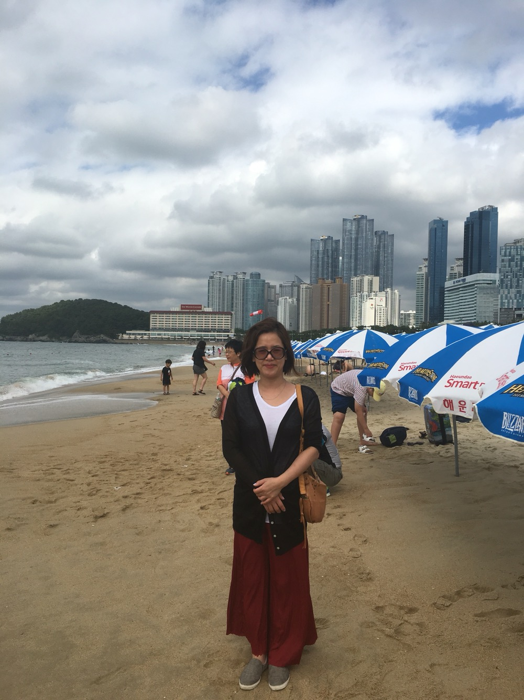

- 엄마
- 아빠
- 가족사진
1.엄마

위 사진은 가족끼리 해운대를 놀러갔을때 찍은 사진이다
부산 여행은 정말 개꿀잼이었다
1. 엄마의 몸무게
이렇게 보면 말라보이지만 사실은 무려 70kg 몸무게를 가지고 계신다
하지만 요즘은 석우가 무려 74kg를 넘었기 때문에 우리집 몸무게 1등이 바뀌었다
2. 엄마의 요리
엄마는 매우 요리를 잘한다
꽂등심 스테이크, 안심스테이크, 부채살 스테이크, 삼겹살, 살치살 스테이크등 모든 종류의 고기를 최상의 품질로 구울 수 있다
그 외에도 카레, 잊을만 하면 하는 오리고기 볶음밥등을 정말 맛있게 잘한다
하지만 엄마도 실패한 요리가 하나 있다
바로 고추장오징어 볶음밥이다
엄마는 맛이없어도 절대 맛없다고 하는데 처음으로 엄마 입에서 맛없다는 소리가 나오게 만든 전설의 요리이다
3. 엄마와 수학
엄마는 수학을 정말 잘한다
어렸을때는 덧셈을 물어보면 모른다 했는데 커서 행렬과 벡터를 물어보니 정말 잘한다
4. 엄마의 관심대상
옛날: 석찬(앙 영재고 개이득) -> 현재: 무한 루프(석우 < - > 아빠)